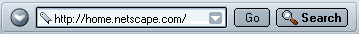

Navigator 設定
以下のセクションでは、Mozilla のブラウザコンポーネントである Navigator に関連する設定パネルについて解説します。設定パネルを表示するには、次の手順に従ってください：
- ［編集］メニューを開き、［設定］を選択します。
表示設定
このセクションでは、［表示］設定パネルの使い方について解説します。パネルが表示されていない場合は、次の手順に従ってください：
- ［編集］メニューを開いて［設定］を選択します。
- ［表示］をクリックします。
表示設定 − 表示
このセクションでは、メインの表示設定パネルの使い方を解説します。このパネルが表示されていない場合は、次の手順に従ってください：
- ［編集］メニューを開いて［設定］を選択します。
- ［表示］カテゴリーをクリックします。
表示設定パネルで、Mozilla を立ち上げた時に利用したいコンポーネントを設定できます：
- Mozilla が開始した時に起動： Mozilla を立ち上げた時に使いたいコンポーネントを選択してください。
- ツールチップを表示： Mozilla インタフェースの上にカーソルをあわせた時に、ツールチップを表示したい場合には、これを選択してください。
- Web サイトのアイコンを表示： サイト特有のアイコンを表示したい場合は、これを選択してください。アイコンが利用できる場合は、ブックマークアイコンが変わります。
|  |
|
ブックマークアイコン（ロケーションの左に表示）
|
Web サイトアイコンは、ロケーションバーの左側とブックマークリストで利用されます。
表示設定 − フォント
このセクションでは、フォント設定パネルの使い方について解説します。このパネルが表示されていない場合は、次の手順に従ってください：
- ［編集］メニューを開いて［設定］を選択します。
- ［表示］カテゴリーの中の、［フォント］をクリックします。（サブカテゴリーが表示されていない場合は、カテゴリーをダブルクリックしてリストを開きます。）
フォント設定パネルでは、フォントのタイプ、サイズ、そして解像度を設定することができます。
注： 選択された言語が該当するスタイルを利用できないことがあるため、スタイルによっては選択できない場合もあります。
- 言語用のフォント： 言語の文字セットを選択してください。例えば、標準フォントを欧米の文字セット（Roman）に設定する場合には "欧米" を選択してください。
- Proportional： Proportional テキストを Serif（Times Roman など）またはSans Serif（Arial など）のどちらで表示するかを選択してください。また、Proportional テキストのフォントサイズも指定できます。Proportional テキストは幅が変更できるため、文字幅も変わります。
- Serif： Web ページの表示に利用したい Serif フォントを選択します。
- Sans-serif： Web ページの表示に利用したい Sans Serif フォントを選択します。
- Cursive： Web ページに利用したい Cursive（筆記体）フォントを選択します。
- Fantasy： Web ページに利用したい Fantasy フォントを選択します。
- Monospace： Web ページに利用したい Monospace フォント（例： Courier）を選択します。Monospace テキストは幅が一定で、すべての文字が同じ幅で表示されます。
- Web ページで他のフォントを利用できる： このチェックボックスを選択すると、ユーザ設定の替わりに、Web ページのフォントとサイズ設定が使用されます。
- 解像度を表示： Web ページを表示する解像度をドロップダウンリストから選択します。"他..." を選択すると "画面解像度の測定" ダイアログボックスが開き、画面に表示される行の長さを用いて、解像度を調整できます。解像度を高くすると、画面によってはテキストが読みやすくなることがあります。
表示設定 − 配色
このセクションでは、配色設定パネルの使い方について解説します。このパネルが表示されていない場合は、次の手順に従ってください：
- ［編集］メニューを開いて［設定］を選択します。
- ［表示］カテゴリーの中の、［配色］をクリックします。（サブカテゴリーが表示されていない場合は、カテゴリーをダブルクリックしてリストを開きます。）
配色設定パネルでは、Web ページの背景やテキストの色を設定することができます：
- テキストと背景： カラーブロックをクリックして、Web ページで表示するテキストと背景の色を選択します。
- システムカラーを使用： あなたのシステム配色設定を利用するにはこれを選択します。
- リンクの色： カラーブロックをクリックして、Web ページでアクセスしていないリンクとアクセスしたリンクの色を選択します。
- リンクに下線を付ける： Web ページに下線を引いたリンクを表示するには、これを選択してください。
- Web ページが独自の配色と背景を提供する場合：
- 常に Web ページで指定された配色と背景を使用する： Web ページが表示する配色や背景を指定することができるようにします。
- 指定された配色と背景画像を無視して、自分で選択した配色を使用する： あなたが配色や背景を選択することができるようにします。
- 構文に対応したカラー化： これを選択すると、Web ページのソースにある HTML 文法に特定の色をつけて表示することができます。
ヒント： Web ページのソースを表示するには、Navigator の［表示］メニューを開き、［ページのソース］を選択します。
表示設定 − テーマ
このセクションでは、テーマ設定パネルの使い方について解説します。このパネルが表示されていない場合は、次の手順に従ってください：
- ［編集］メニューを開いて［設定］を選択します。
- ［表示］カテゴリーの中の、［テーマ］をクリックします。（サブカテゴリーが表示されていない場合は、カテゴリーをダブルクリックしてリストを開きます。）
テーマ設定パネルでは、Mozilla に異なったテーマを適用することで、見た目やスタイルを変化させることができます。
- 使用するテーマ： インストールされたテーマの一つを選んで Mozilla の外観を変えます。
- ［テーマの名前］をアンインストール： 選択したテーマを削除するにはこれをクリックしてください。
- 新しいテーマを入手： このリンクをクリックすると、追加のテーマをダウンロードできる Web ページに行くことができます。
注：
- 新しいテーマを適用するには、そのテーマを選択してから Mozilla を終了し、再起動する必要があります。
- アンインストールしたテーマを適用しなおすことはできません。
表示設定 − 言語／コンテンツ
このセクションでは、言語／コンテンツ設定パネルの使い方について解説します。このパネルが表示されていない場合は、次の手順に従ってください：
- ［編集］メニューを開いて［設定］を選択します。
- ［表示］カテゴリーの中の、［言語／コンテンツ］をクリックします。（サブカテゴリーが表示されていない場合は、カテゴリーをダブルクリックしてリストを開きます。）
言語／コンテンツ設定パネルでは、コンテンツパックや言語パックを選択して、Mozilla で利用できるようにします。
2002年 3月 6日
Translated for Mozilla by mozilla-gumi <http://mozilla.gr.jp> participants.